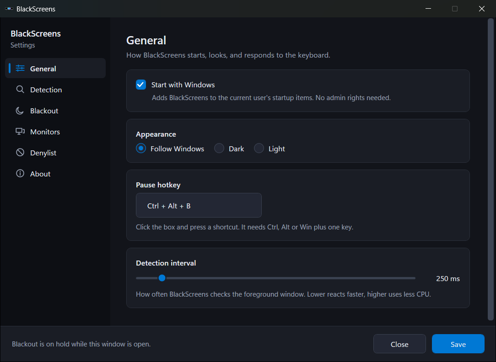
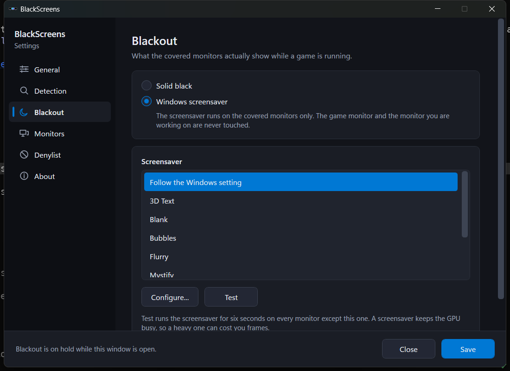
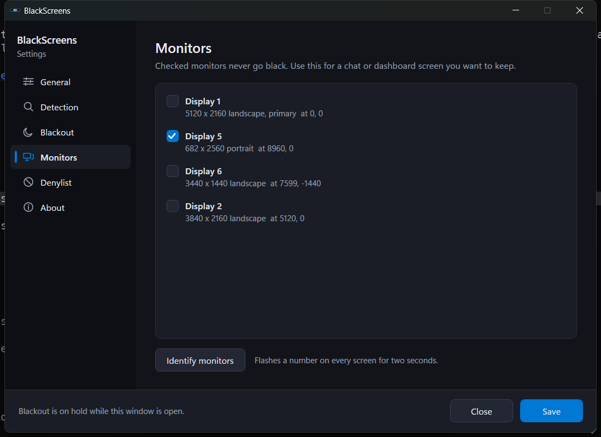
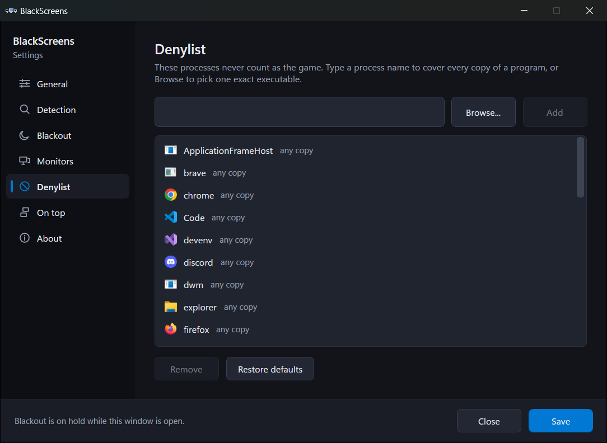
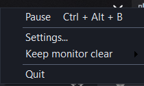

Knows a game when it sees one
Detects fullscreen and borderless windows by their real window style and geometry, not by a list of game names. Browsers, chat apps and the Windows shell sit on a denylist so they never trigger a blackout.
Windows tray app
A game goes fullscreen and your other screens keep glowing at you: a browser, a chat window, a dashboard, all pulling your eye at the worst moment. BlackScreens covers them. The game keeps its monitor, whatever you are actually working in stays visible, and everything else goes dark until you alt tab back out.
Free and open source, MIT licensed. No account and no telemetry.
Detects fullscreen and borderless windows by their real window style and geometry, not by a list of game names. Browsers, chat apps and the Windows shell sit on a denylist so they never trigger a blackout.
The game's monitor stays clear, the monitor holding keyboard focus stays clear, and any monitor you whitelist stays clear. Monitor rectangles are matched against the real display list first, so a near miss can never black out everything.
Covered monitors go solid black by default. Prefer some motion? Point BlackScreens at any installed Windows screensaver and it runs there instead, on the covered screens only.
Lives in the tray. Pause with Ctrl + Alt + B or from the menu, where Pause is a check mark rather than a button that renames itself. Polls a few times a second and does nothing at all when no game is running.
Overlays are positioned in raw screen pixels, so a 4K monitor at 150 percent next to a 1080p at 100 percent still gets covered edge to edge. Portrait screens, negative coordinates and hot plugged displays are all handled.
Asked once on first run, and off unless you say yes. Once on, BlackScreens asks GitHub daily whether there is a newer release, downloads it, and installs it at a moment when no monitor is blacked out, so it never restarts on you mid game. That check is the only network request it makes.
MIT licensed, no installer bundles, no analytics, nothing about you sent anywhere. Settings
are a readable JSON file under %LocalAppData%\BlackScreens.
The settings window follows your Windows theme, dark or light, and picks up your accent color.





A few times a second BlackScreens looks at the visible top level windows. A window counts as a game when it is not cloaked, has no title bar or is a popup, fills its monitor to within two pixels, and its process is not on the denylist. By default only the window in the foreground can start a blackout, so a game you alt tabbed away from leaves your desktop alone.
Everything else is a plain black, click blocking window placed exactly over each monitor that should be covered. When the game closes or you press the pause hotkey, those windows go away. There is no driver, no hook, and nothing that touches the game process.
Windows 10 version 1809 or newer, 64 bit.